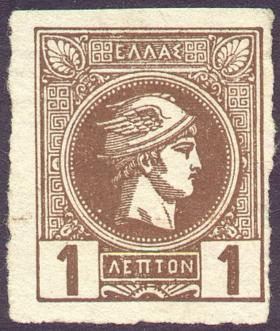
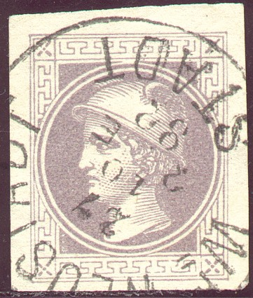
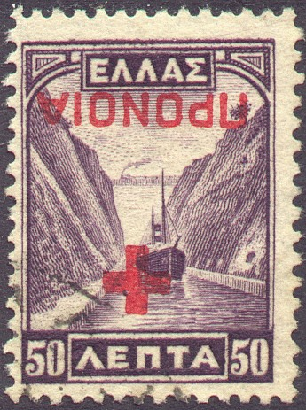
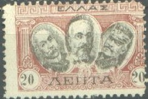

(Left: Large Hermes Head issue; right: Small Hermes Head issue)
ELLAS - Grèce - Griechenland - Griekenland
Return To Catalogue -
Large Hermes Head issues (1861) - Small Hermes Head issues (1886) - Olympic games (1896, 1906) - Olympic Games 1896 forgeries - Greek gods 1911 issue - 1901-1920 issues - Postage
due stamps - Fiscal stamps - Cancels on the first issues - Large Hermes Head forgeries, part 1 - Large Hermes Head forgeries, part 2; Oneglia
and Sperati - Large Hermes Head
forgeries, part 3; Fournier - Greece
Large Hermes Head forgeries, part 4; Imperato
Cavalla - Crete
- Dedeagh - Epirus
(HPEIROS) - Greek
territories during the Balkan war - Icaria - Ionian Islands (IONIKON KRATOS, see Volume 1) - Mytilene
- Samos - Smyrne
(Smyrna) - Thrace
Note: on my website many of the
pictures can not be seen! They are of course present in the
catalogue;
contact me if you want to purchase the catalogue.
| British post offices in Crete (listed in Cd 1) | PROSWPINON TACUDPOMEION HPAKLEIOU |
| Cavalle | ELLHNIKH DIOIKHSIS (on Bulgarian stamps) |
| Icaria | ELLHNIKH DIOIKHSIS |
| Chios | E*D overprint on greek stamp |
| Crete | KRHTH |
| PROSWPINH KUBERNISIS | |
| Dedeagh | DEDEGATS |
| Dodecanese (see at the end of this file) | KOINON NHSIOTON (NHSIWTWN?) |
| Epirus | ELLHNIKH DIOIKHSIS HPEIROS |
| " | KRATOS ANEXARTHOS |
| " | Stamps of Greece overprinted B.HPEIROS |
| " | Stamps of Greece overprinted ELLHNIKH 1914 CEIMARRA |
| Ionian Islands | IONIKON KRATOS (see Cd1) |
| Samos | SAMOU |
| Smyrna | E.T. SMYPNH |
| Thrace | Stamps of Greece overprinted Dioichsiz Dntichz Qrachz |
| Stamps of Greece overprinted Dioichsiz Qrachz |

(Left: Large Hermes Head issue; right: Small Hermes Head issue)
Click here for Greece
Large Hermes Head forgeries, part 1
Greece Large Hermes Head forgeries, part
2; Oneglia and Sperati
Greece Large Hermes Head forgeries, part
3; Fournier
Greece Large Hermes Head forgeries, part
4; Imperato
and here for cancels on the first issues.

(Postcard in a similar design, reduced size)

Stamp with no country name in a similar design: this is a
newspaper stamp of Austria.
Olympic Games 1896 issue, forgeries


(Reduced size)
The status of this stamp (label?) is not quite clear. It was issued in 1838(!). More information can be found on: http://www.si.edu/postal/collections/recent99.htm (this cover was acquired in 1999 by the Smithsonian National Postal Museum). Only four covers with such stamps are known to exist.
2 l red 5 l blue
These stamps have a zig-zag perforation.
Value of the stamps |
|||
vc = very common c = common * = not so common ** = uncommon |
*** = very uncommon R = rare RR = very rare RRR = extremely rare |
||
| Value | Unused | Used | Remarks |
| 2 l | c | c | |
| 5 l | c | c | |
1 l on 10 l blue 1 l on 80 l blue 5 l on 60 l blue 5 l on 80 l blue 10 l on 70 l blue 10 l on 90 l blue 20 l on 20 l blue 20 l on 30 l blue 20 l on 40 l blue 20 l on 50 l blue 20 l on 60 l blue 20 l on 80 l blue 20 l on 90 l blue Bisected stamps 5 l on 10 l blue 5 l on 60 l blue 5 l on 80 l blue 10 l on 70 l blue 10 l on 90 l blue Similar overprint, but now 'K.P. lept.' and 2 times the value
1 l on 10 l lilac 5 l on 10 l lilac (overprint brown) 5 l on 10 l blue (overprint brown) 10 l on 50 l lilac (overprint brown or black) 20 l on 2 D blue 50 l on 1 D blue
Other stamps with similar overprints exist (merely fiscal stamps).
Other charity issues of later date:

Forgeries exist of this stamp on thinner paper.
Ship in canal with red cross overprint:

(the overprint exist inverted and is not very rare)

(Stamps of Greece issued in 1927)


Later issue, with overprint 'eLLHNIKH DIOIKHCIC'

Pictures of three men, pillars at the sides. I have seen the following values: 20 l red and black, 25 l blue and black, 50 l violet and black and 1 Dr yellow and black.
Picture of a King George with Greec temple at the
background. I have seen the values 20 l orange, 20 l green, 20 l
brown, 20 l blue, 20 l black and 20 l red in the above design.
Apparently, this stamp was based on or is an essay of Greece from
1864 (source: Die Postwertzeichen von Griechenland by
A.E.Glasewald 1896). It is shown in the book 'Kurzgefasste
Beschreibung der Essays-Sammlung von Martin Schroeder Leipzig'
from A.Reinheimer 1903 as picture #173 and #174. In this book an
essay collection of a certain M.Schroeder is shown, which was
build up from 1893 to 1902. Maybe the plates have fallen in wrong
hands, in view of the large number of these 'essays' that can be
found nowadays. In Glasewald 16 values of the 20 l are given (all
in different colors). The 20 l blue exists in a type with a
slightly smaller head.
Another set of proofs of 5 l (6 colors), 20 l (5 colors) and 40 l
(5 colors) exists of the head of King George, but without the
temple.
DODECANESE:
Greec god, inscription 'KOINON NHSIOTON'. This set consist of three values: 1 l green, 5 l blue and 10 l red. These stamps seems to be local issues for Dodecanese (issued in 1912).

(Stamp of Turkey, used in Chio, Greece)
A. Karamitsos, auctions with stamps of Greece and the Greek territories http://www.karamitsos.com/. From their website: "We are experienced specialists in the stamps and postal history of Greece, Greek Errors, New Greek Territories, Levant, Cyprus and many other foreign countries."
Stamps - Timbres - Briefmarken - Postzegels
{kind=link}
{kind=link}
{kind=link}